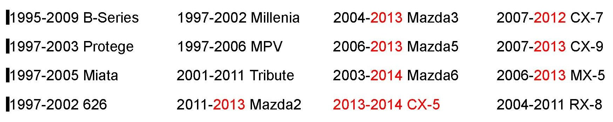
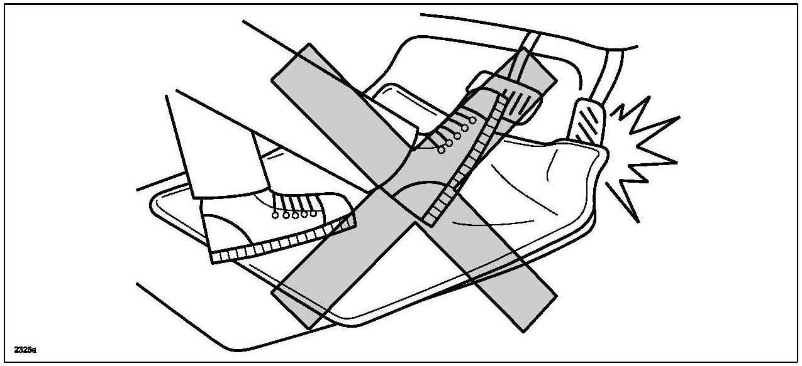

Interior - Proper Floor Mat Usage And Installation
Bulletin No: 09-005/13Last Issued: 03/11/2013
Subject:
PROPER USAGE OF DRIVER'S FLOOR MAT
BULLETIN NOTE
*^ This bulletin supersedes the previous bulleting 09-011/10 issued on 02/107/10/. The APPLICABLE MODELS/VIN(S) have been revised.
^ Changes are noted below in Red beside the change bar, or asterisks.*

APPLICABLE MODEL(S)/VINS
DESCRIPTION
This service bulletin provides information regarding the proper use of the driver's's floor mat to avoid any potential interference with the foot pedals. The following are possible causes of floor mat interference, which can be avoided with proper usage.

^ Floor mat moves forward due to improper installation.
^ Inappropriate floor mat (such as aftermarket, non-factory-equipped, or non-genuine) is used.
^ Floor mat is stacked one on top of another.
Use these points at your dealership to protect our mutual operations and to help ensure our customers' safety.
1. Mazda recommends that only floor mats meeting Mazda OEM specifications be used in Mazda-brand vehicles.
^ Genuine Mazda floor mats are carefully designed for use in specific Mazda vehicles.
^ Non-Mazda branded floor mats (aftermarket) may not meet Mazda OEM specifications for use in Mazda vehicles, including the way they anchor to the floor.
WARNING:
Use of non Mazda-brand floor mats, or floor mats designed for vehicle models other than those in which the mats will be used, may cause various safety and performance-related issues.
2. Please re-confirm your internal procedure for properly installing floor mats. Make sure they meet Mazda OEM specifications at your dealership prior to delivery to the customer using the proper floor-anchoring system. While the installation timing varies by dealership (PDI, Cleanup or Final Delivery), please be sure that the mats are installed properly before the customer takes delivery of the vehicle.
3. Never overlay (double mat) a Genuine Mazda Accessory All Weather Floor Mat over a standard Mazda OEM carpeted mat (or vice versa). These mats were not designed to be used over the existing carpeted mats (and vice versa). As the labels on the mats themselves indicate, the carpeted mats must be removed before installing All Weather Mats. Please remind customers of this when you deliver the car to them.
4. Establish a system of documentation in your service department to record if any improper use of floor mats, including double matting, is witnessed by your Technicians or Service Advisors. This should be standard practice on any repair order, regardless of repair type, and should be reviewed with the customer followed by a signature.
5. Carefully review your CPO and Used Vehicle departments' reconditioning policies regarding floor mats. While most OEM mats are more expensive than aftermarket mats for pre-owned vehicles, any floor mat selected for use should meet OEM specifications, including with regard to the floor anchoring system. This will help you and your customers avoid the risks of using floor mats not specifically designed for particular vehicles.
When a customer's Mazda is in for scheduled maintenance or repair, take every opportunity to inform the customer of the following points for proper usage of the driver's floor mat.
1. Always ensure that the floor mat is properly installed and secured with retainer. If a floor mat without any retainer is used, recommend to use the one with a retainer (e.g. Mazda genuine floor mat).
WARNING:
Make sure the floor mats are hooked on the retention pins to prevent them from bunching up under the foot pedals. Using a floor mat that is not secured is dangerous as it may interfere with the accelerator and brake pedal operation, which could result in an accident.
2. Always use a floor mat matching the size and shape of the vehicle's floor.
3. Always use the floor mat alone. Do not stack one on top of another.
WARNING:
Do not install two floor mats, one on top of the other, on the driver's side. Installing two floor mats, one on top of the other, on the driver's side is dangerous as the retention pins can only keep one floor mat from sliding forward. When using a heavy duty floor mat for winter use, always remove the original floor mat. Loose floor mat(s) may interfere with the foot pedals and could result in an accident.
4. Check the floor mat before driving. Ensure that the floor mat is properly secured, the floor mat does not interfere or overlap with the accelerator pedal even when fully opened, and that there is sufficient clearance between the mat and the pedal.
5. Carefully read the instructions that come with / is tagged on the floor mat.

Disclaimer